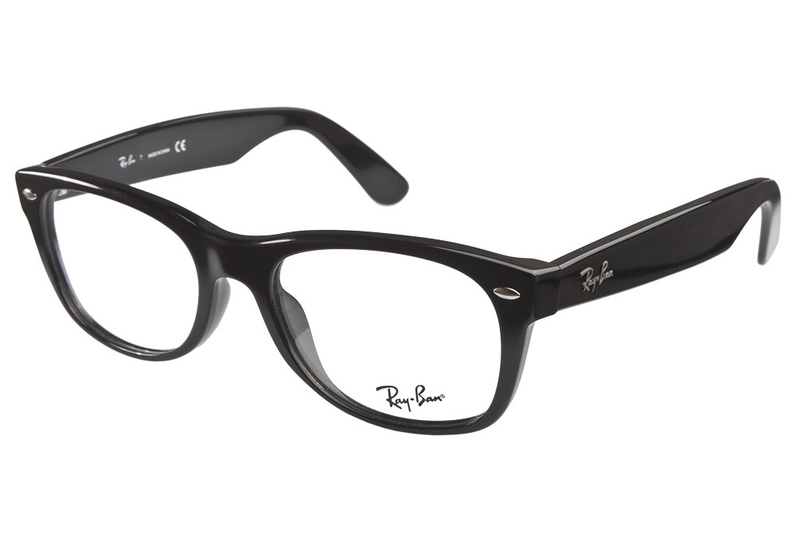

Introduction

Les équipements informatiques sont des outils très utiles qu'on utilise quotidiennement. Ils nous aident à faire le travail plus rapidement, mais l'avantage vient avec des désavantages. Une de ces désavantages sont les risques de santé associés à l'utilisation des ordinateurs. Certaines problèmes qui peuvent venir de l'utilisation de la technologie informatique sont assez mineures, tant dis que certaines d'autres sont plus graves. La plupart des problèmes de santés sont seulement causées par une utilisation trop grande de la technologie, mais ce n'est pas toujours vrai. Si on utilise beaucoup la technologie, il faut au moins connaitre les conséquences possibles.
Syndrome du canal carpien
Le syndrome du canal carpien est une condition des articulations causée par des movements répétés (Source). On peut contracter ce syndrome si on tappe beaucoup sur une longue période de temps. Des études ont montrés qu'un huitième des professionnels informatique souffrent du syndrome du canal carpien. La cause est encore débattue, certains disent que c'est causé par la position du poignet en tappant, et certains disent que c'est à cause du mouvement répétitif d'un clic à la souris. C'est une condition qui fait très mal aux articulations affectés.
Syndrome de vision informatique
L'utilisation prolongé des écrans peut avoir un effet négatif sur les yeux. Le syndrome de vision informatique est une condition visuelle dégénérative qui peut entrainer la myopie (la vision beaucoup réduit), la vision floue, la fatigue aux yeux, et le glaucome.  Les problèmes de visions en informatique sont moins communs aujourd'hui qu'avant, car les vieux ordinateurs avaient des écrans de mauvaises qualité et il s'actualisaient trop lentement. Les ordinateurs courants viennent souvent avec des bonnes écrans, et donc, ne causeraient pas autant de problèmes de vision, même s'il y a encore quelques risques.
Problèmes musculoskeletal
La façon que les personnes qui utilisent souvent les ordinateurs s'assoient, et se positionnent pour voir l'écran peut commencer des problèmes de posture. Ça peut aussi causer de la douleur dans le haut dos, dans les épaules, et dans le cou. Pour éviter ces problèmes, il faut bien s'assoir tout droit, sans trop se pencher ou utiliser une position non-naturelle pour longtemps. On peut aussi se lever et s'étirer un peu pour changer de position et de movement (Source).
Maux de tête
Quand on regarde à un écran pendant un temps prolongé, on peut parfois avoir des maux de tête parce qu'il y a de la tension au bas du crâne (Source). Un mal de tête peut diminuer le niveau de productivité, et donc, le travail ne va pas se faire. On peut éviter les maux de tête en gardant le cou droit en avant de l'ordinateur. Si tu as un mal de tête, tu peux prendre une dose d'acetaminophen (Tylenol) mais pour rester en sécurité, il faut bien faire attention au dosage (Source). Toutefois, c'est toujours meilleur d'éviter les maux de tête au lieu, en gardant le cou droit, ou en se relaxant les yeux, en suivant les exercises ici (Anglais).
L'obésité
Si quelqu'un travail/joue toujours à l'ordinateur, sans faire de l'exercice (surtout s'ils mangent de la nourritune mauvaise pour la santé), c'est possible pour eux de gagner beaucoup de poids, et de devenir surpoids, et plus tard, obèse. Si on veut beaucoup utiliser la technologie, il faut au moins se lever parfois pour faire de l'exercice, puisque rester immobile peut augmenter les chances d'avoir de divers maladies (Source), et peut être éviter de manger trop de nourriture gras.
Conclusion
En conclusion, je vois qu'il y a plusieurs conditions qui peuvent être causés par une
sur-utilisation de technologie informatique, mais la plupart peuvent être évités. Dans mon expérience,
je ne vois pas de problème si on fait régulièrement de l'exercice, et si on ne mange pas trop de gras.
J'utilise la technologie informatique depuis que je suis un enfant, et je n'ai jamais rencontré de problèmes
de santé.
©2015 KIAYEorg